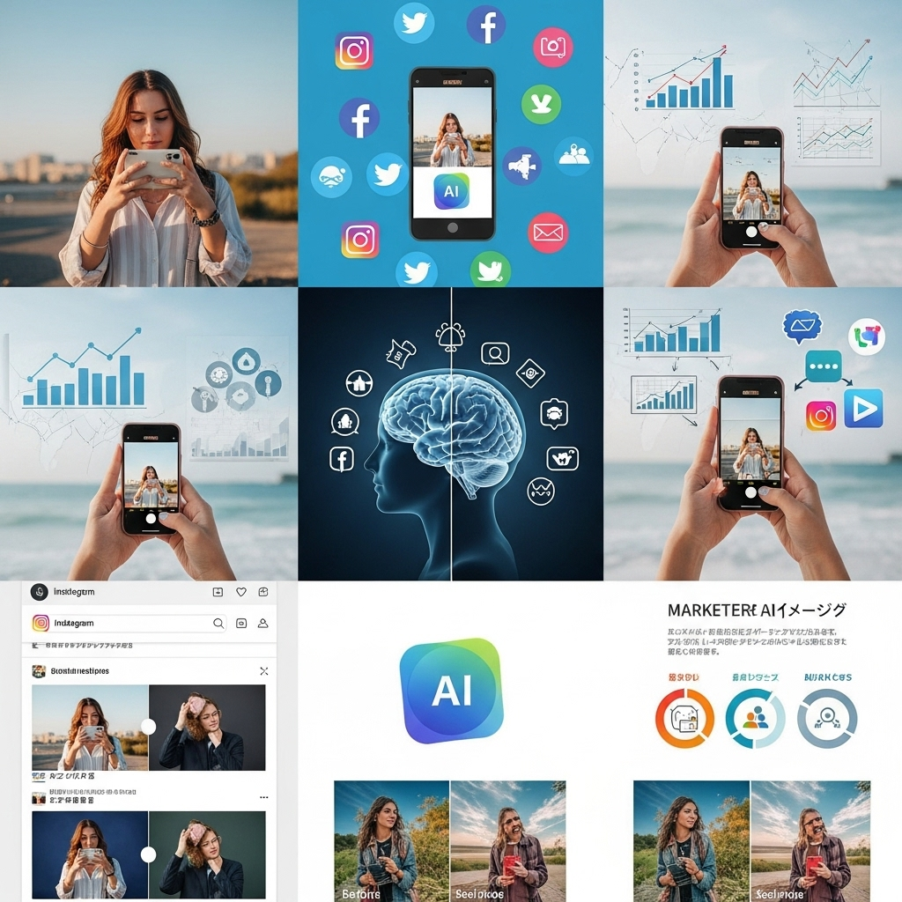
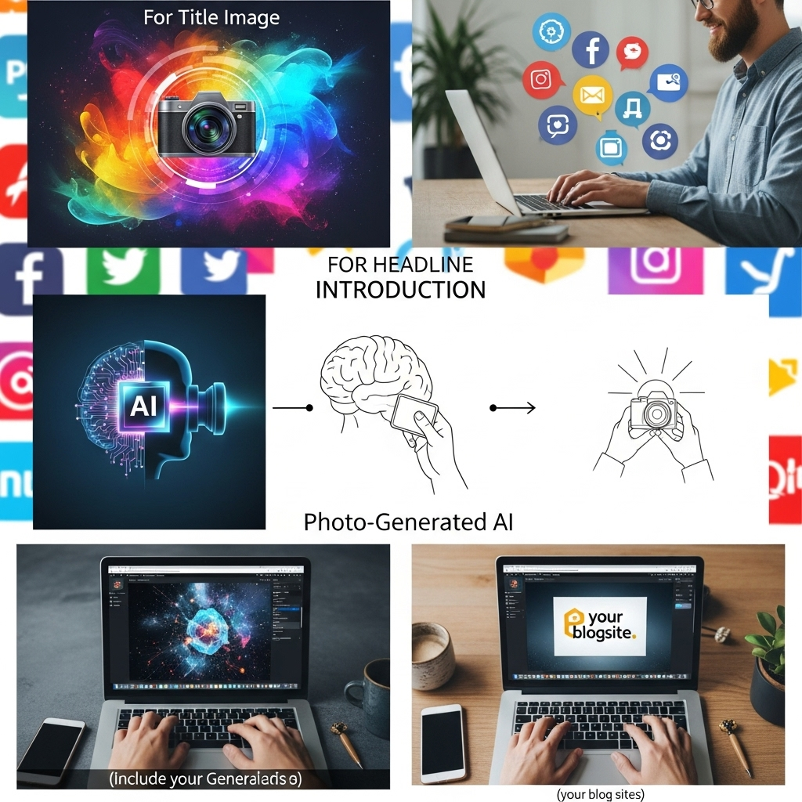
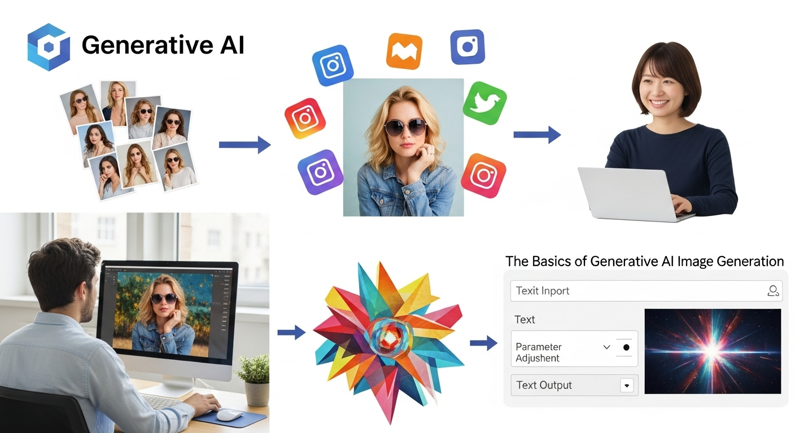
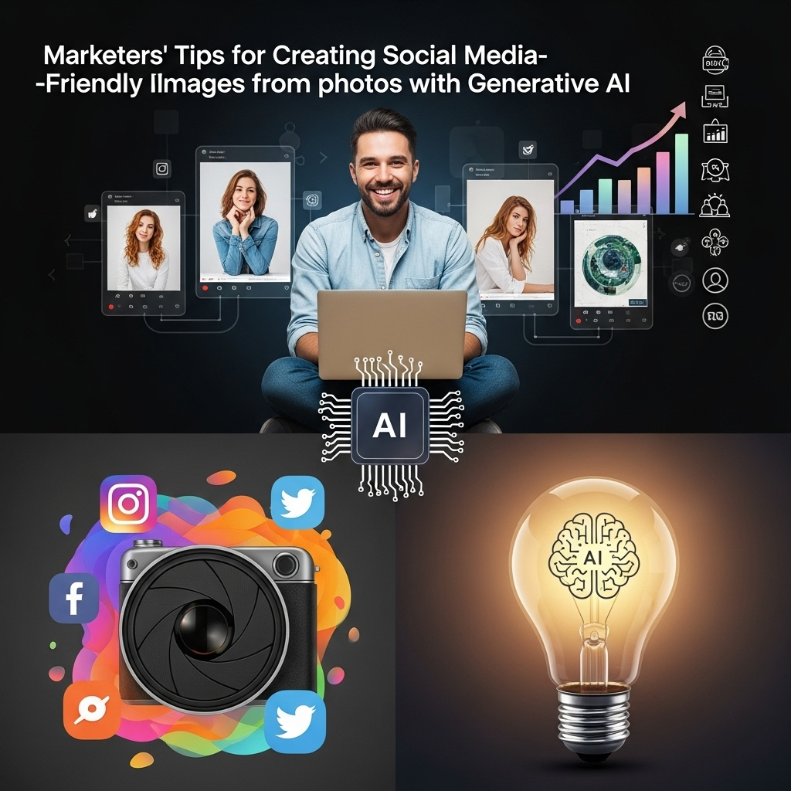
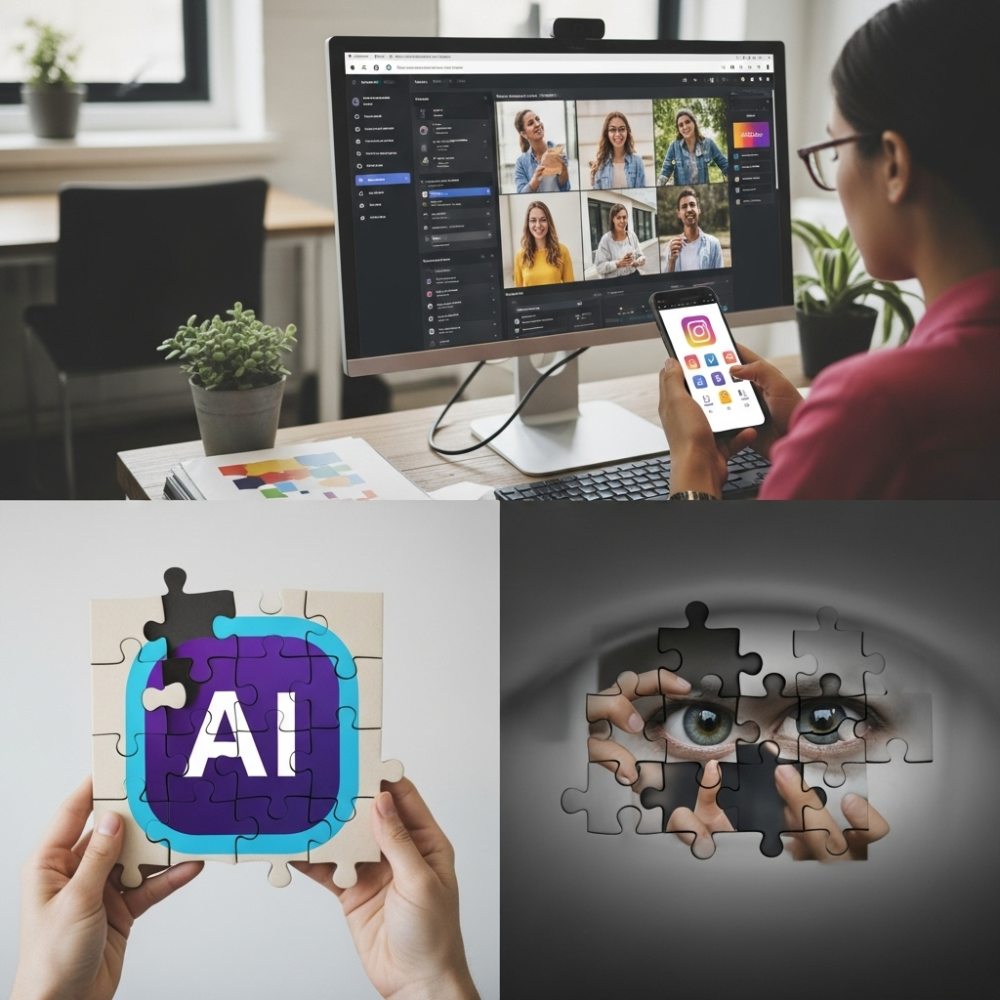
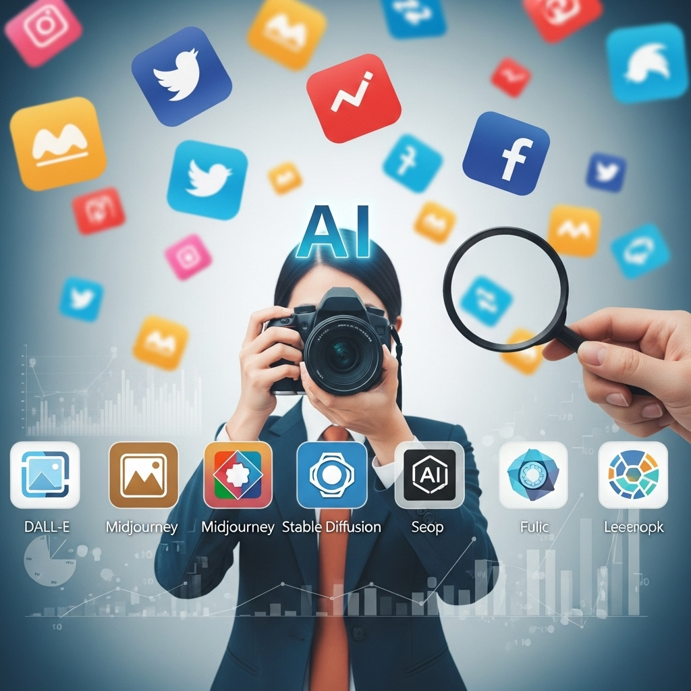
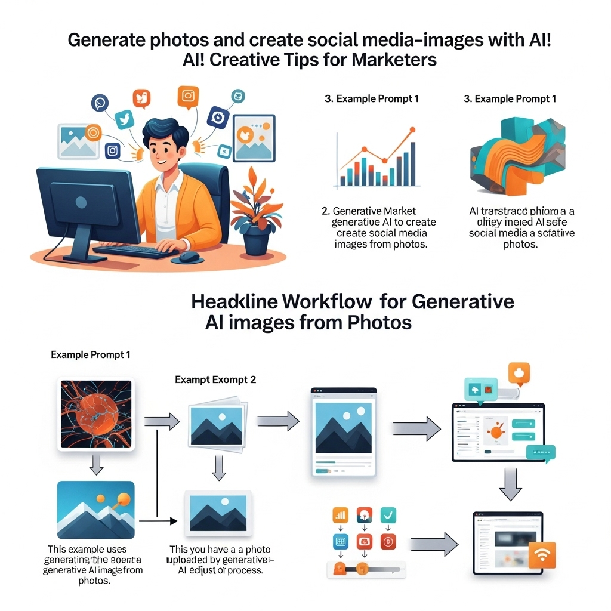
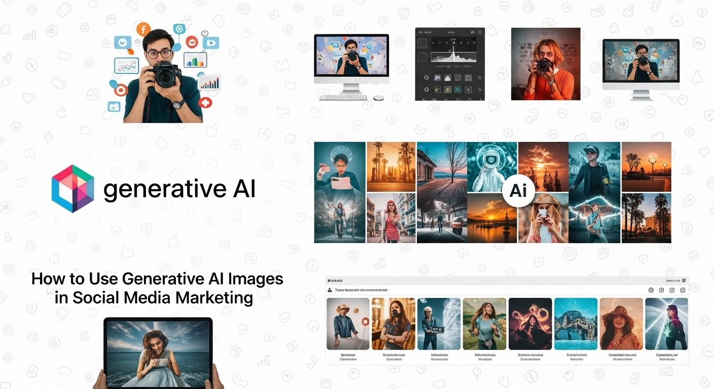

写真から生成AIでSNS映え画像を！マーケター向け作成術

導入

デジタル化が加速する現代において、SNSは企業と顧客をつなぐ最も強力なチャネルの一つとなりました。特に、Instagram、TikTok、Pinterestといったプラットフォームでは、視覚的なコンテンツがコミュニケーションの中心を担い、その質がエンゲージメントを大きく左右します。しかし、常に新鮮で魅力的な画像を制作し続けることは、多くのマーケターにとって時間、コスト、そして創造性という点で大きな課題となっていました。
そんな中、近年急速な進化を遂げているのが「生成AI」です。テキストから画像を生成する能力はもとより、既存の写真を基に新たな画像を創り出す技術は、SNSマーケティングの可能性を劇的に広げようとしています。もはや、AIは単なるツールではなく、私たちのクリエイティブなパートナーとして、マーケティング戦略の中核を担う存在へと成長しました。
本記事では、SNSマーケターの皆様がこの強力な生成AIを最大限に活用し、写真から「SNS映え」する魅力的な画像を効率的かつ効果的に生み出すための実践的な知識と具体的な手法を、優しく、そして丁寧に紐解いていきます。生成AIが写真から画像を生成する仕組みの基本から、そのメリット・デメリット、おすすめツールの選び方、具体的な作業の流れ、そしてSNSマーケティングにおける活用術、さらには最適なツール選びの比較ポイントまで、網羅的に解説いたします。
AI技術の進化は目覚ましく、その恩恵を享受しない手はありません。これからのSNSマーケティングをリードするためには、生成AIとの協働が不可欠となるでしょう。さあ、未来のマーケティングを共に探求し、あなたのブランドを新たな高みへと導く一歩を踏み出しましょう。
生成AI画像生成の基本

生成AIが写真から画像を生成する技術は、SNSマーケティングにおけるビジュアルコンテンツ制作に革命をもたらしています。しかし、この「魔法」のような技術が、一体どのような仕組みで成り立っているのか、そしてなぜ今、これほどまでに注目されているのかを理解することは、効果的な活用への第一歩となります。ここでは、その基本原理と背景について、優しく丁寧に解説していきます。
段落1-1：基本１．生成AIが写真から画像を生成する仕組み
生成AIが写真から画像を生成するプロセスは、一見すると複雑に感じられるかもしれませんが、その根底にあるのは、膨大なデータから「学習」し、その学習に基づき「創造」するというシンプルな原理です。特に、写真から画像を生成する際には、既存の画像を「参照」として用いる点が特徴的です。
この技術の核となるのは、主に「GAN（敵対的生成ネットワーク）」や「Diffusion（拡散）モデル」といった深層学習のアー法です。
GAN（敵対的生成ネットワーク） は、二つの神経ネットワーク、すなわち「生成器（Generator）」と「識別器（Discriminator）」が互いに競争しながら学習を進めることで画像を生成します。生成器は、本物の写真に近い画像を生成しようと試み、識別器は、生成器が作った画像が本物か偽物かを見分けようとします。この「いたちごっこ」のような学習を繰り返すことで、生成器は最終的に人間が見ても本物と区別がつかないほどの高品質な画像を生成できるようになります。写真から画像を生成する際、GANは入力された写真を元に、その特徴を抽出し、異なるスタイルやテクスチャ、あるいはまったく新しい要素を付加した画像を生成することが可能です。例えば、風景写真を油絵風に変換したり、特定の季節の写真を別の季節の風景に変えたりといった応用が考えられます。
一方、近年主流となりつつある Diffusionモデル は、より直感的なプロセスで画像を生成します。このモデルは、まずクリアな画像に段階的にノイズ（ランダムな情報）を加えていき、最終的に完全にノイズまみれの画像にします。そして、その逆のプロセス、つまりノイズだらけの画像から段階的にノイズを取り除き、元のクリアな画像を復元するように学習します。この「ノイズ除去」の過程で、ユーザーが与えたテキストプロンプトや参照画像の情報を組み込むことで、指定された条件に合致する新しい画像を「生成」するのです。写真から画像を生成する場合、Diffusionモデルは入力された写真の情報を「初期状態」として捉え、そこにプロンプトによる指示を加えてノイズ除去を行うことで、元の写真の要素を保ちつつ、まったく新しい表現やバリエーションを生み出すことができます。
具体的に「写真から画像を生成する」とは、以下のようなアプローチが考えられます。
- スタイル変換（Style Transfer）：入力された写真のコンテンツ（被写体や構図）を維持しつつ、別の写真や画家のスタイル（筆致、色使いなど）を適用して画像を生成します。例えば、あなたの商品の写真が、ゴッホの「星月夜」のようなタッチで描かれたかのような画像を生成できます。
- 画像補完・拡張（Inpainting/Outpainting）：写真の一部を消去し、AIにその部分を自然に補完させたり（Inpainting）、写真の境界線を越えて背景を拡張したり（Outpainting）することができます。これにより、撮影時には収まらなかった広い背景を生成したり、不要なオブジェクトを消し去ったりすることが可能になります。
- バリエーション生成（Variation Generation）：元の写真の構図や被写体を参考にしつつ、異なる色合い、雰囲気、光の条件、あるいは細部の変更を加えた複数のバリエーション画像を生成します。これにより、同じ商品の写真でも、ターゲット層やキャンペーンに合わせて多様な表現を生み出せます。
- オブジェクトの追加・変更（Object Insertion/Modification）：写真の中に新しいオブジェクトを追加したり、既存のオブジェクトの見た目を変更したりすることも可能です。例えば、無地のTシャツにブランドのロゴを自動で配置したり、季節に合わせて背景の小物を変更したりできます。
これらの技術は、AIが膨大な量の画像データから「何がどのように見えるか」「どのようなものが自然な組み合わせか」といったパターンを学習しているからこそ実現します。そして、この学習の成果を、ユーザーが入力する「プロンプト（指示文）」や「参照画像」という形で制御することで、意図した画像を生成するのです。
AIは人間の創造性を模倣し、時にはそれを超えるような表現を生み出します。それは、まるで熟練の職人が素材の特性を理解し、新たな形へと昇華させるかのように、写真という「素材」を元に、無限の可能性を秘めた「作品」へと変貌させる力を持っているのです。
段落1-2：基本２．なぜ今、写真からのAI画像生成がSNSで注目されるのか
生成AIによる写真からの画像生成が、今日のSNSマーケティングにおいてこれほどまでに注目を集めているのには、明確な理由があります。それは、SNSが持つ特性と、現代のデジタルマーケティングが直面する課題、そしてAI技術の驚異的な進化が、見事に合致した結果と言えるでしょう。
- SNSの視覚優位性への対応
現代の主要なSNSプラットフォーム、特にInstagram、TikTok、Pinterestなどは、テキストよりも視覚的なコンテンツが圧倒的な影響力を持つ「ビジュアルファースト」の世界です。ユーザーはスクロールする中で、瞬時に目を引く画像や動画に立ち止まります。写真からのAI画像生成は、この視覚的な魅力を最大限に引き出すための強力な手段となります。単なる写真の投稿ではなく、ブランドの世界観をより深く表現したり、特定のメッセージを効果的に伝えたりするための、カスタマイズされたビジュアルを迅速に提供できるからです。 - コンテンツ飽和と差別化の必要性
SNS上には毎日、膨大な量のコンテンツが投稿されています。このコンテンツ飽和の時代において、他のブランドや競合他社との差別化を図ることは、マーケターにとって喫緊の課題です。ありふれたストック写真や、競合と同じような投稿では、ユーザーの記憶に残ることは困難です。AIを活用することで、既存の写真を基に、ブランド独自のスタイルや、ターゲット層に強く響くユニークな画像を生成できます。これにより、ブランドの個性を際立たせ、ユーザーの目に留まり、記憶に残るための強力な武器となるのです。 - AI技術の飛躍的な進化とアクセス容易性
数年前までは、高度なAI画像生成は専門的な知識と高価な機材を必要とするものでした。しかし、近年、GANやDiffusionモデルといった技術が目覚ましい発展を遂げ、生成される画像の品質は驚くほど向上しました。さらに、これらの技術は使いやすいインターフェースを持つSaaS型ツールとして提供されるようになり、専門家でなくとも、誰もが手軽に高品質なAI画像生成にアクセスできるようになりました。この democratize（民主化）されたAI技術が、多くのマーケターにとって現実的な選択肢となったのです。 - ユーザーエンゲージメントの向上への期待
SNSマーケティングの最終的な目標は、単に「見られる」だけでなく、「共感され」「行動につながる」エンゲージメントを生み出すことです。AIが生成するパーソナライズされた、あるいはストーリー性のあるビジュアルは、ユーザーの感情に訴えかけ、より深いレベルでの共感を促します。例えば、商品の使用シーンを多様なライフスタイルのユーザーに合わせて生成することで、各ユーザーが「自分ごと」として捉えやすくなり、コメントやシェア、購入行動へとつながる可能性が高まります。 - リアルタイムマーケティングへの対応力
SNSのトレンドは驚くべき速さで変化します。キャンペーンやイベント、社会情勢に合わせて、迅速にコンテンツを制作・発信することが求められる場面も少なくありません。AI画像生成は、従来の写真撮影やデザイン制作にかかる時間とコストを大幅に削減できるため、リアルタイムでのコンテンツ制作を可能にします。これにより、旬な話題やトレンドに素早く対応し、ユーザーとの接点を増やすことができるのです。 - マーケティングROI（投資収益率）の向上
高品質なビジュアルコンテンツの制作は、これまで多大なコスト（カメラマン、モデル、スタジオ、デザイナー費用など）を伴いました。AI画像生成はこれらのコストを大幅に削減しながら、同等、あるいはそれ以上のクオリティの画像を生成できる可能性を秘めています。これにより、マーケティング活動全体のROIを向上させ、より効率的な予算配分を実現できるようになります。
これらの理由から、写真からのAI画像生成は、単なる一時的な流行ではなく、SNSマーケティングの未来を形作る不可欠な要素として、今、最も熱い注目を集めているのです。この技術を理解し、使いこなすことが、これからのマーケターにとっての重要なスキルとなることは間違いありません。
生成AI画像を生成するメリット

生成AIが写真から画像を生成する技術は、SNSマーケティングにおいて多岐にわたるメリットをもたらします。これらのメリットを理解し、戦略的に活用することで、あなたのブランドはSNS上で一歩抜きん出た存在となるでしょう。ここでは、その主要なメリットについて、一つひとつ丁寧に掘り下げていきます。
段落2-1：メリット１．SNSエンゲージメントを高めるオリジナリティ
SNSマーケティングにおいて、エンゲージメントの向上は常に最優先事項の一つです。ユーザーの「いいね！」やコメント、シェア、保存といった行動は、ブランドへの関心度やロイヤリティを示す重要な指標となります。生成AIが写真から生み出す画像は、このエンゲージメントを高める上で、これまでにない「オリジナリティ」という強力な武器を提供してくれます。
1. パーソナライズされたコンテンツの創出
AIは、既存の写真を基に、様々なバリエーションの画像を生成できます。これにより、単一の商品写真から、異なるターゲット層のライフスタイルや興味に合わせた多様な使用シーンを創り出すことが可能になります。例えば、同じコーヒーカップの写真でも、ビジネスパーソンがオフィスで使っているイメージ、学生がカフェで勉強しているイメージ、主婦が自宅でくつろいでいるイメージなど、無限のバリエーションを生成できます。ユーザーは「これは自分のためのコンテンツだ」と感じ、より強い共感を覚えることで、エンゲージメントが高まります。
2. ブランドの世界観を深く反映したユニークなビジュアル
ブランドには独自の哲学、価値観、そして美学があります。生成AIは、これらのブランドガイドラインを学習し、既存の写真をその世界観に沿った形で再構築する能力を持っています。例えば、ミニマリストなブランドであれば余計な要素を排除し洗練されたトーンに、賑やかで楽しいブランドであれば色彩豊かで動きのある表現に、といった形で調整が可能です。これにより、一貫性がありながらも常に新鮮な、ブランド独自のユニークなビジュアルをSNSに展開でき、ユーザーはブランドの個性を強く認識するようになります。
3. A/Bテストによる効果的なコンテンツ最適化
AIによる迅速な画像生成能力は、マーケターにとって「試行錯誤」のハードルを劇的に下げます。同じメッセージでも、色合い、構図、背景、モデルの表情など、わずかに異なる複数の画像を生成し、A/Bテストを実施することが容易になります。どのビジュアルがターゲット層の心に最も響くのかをデータに基づいて分析し、最も効果的なコンテンツを特定・最適化することで、エンゲージメント率を継続的に向上させることが可能です。これにより、勘や経験だけでなく、科学的なアプローチでSNSコンテンツを磨き上げることができます。
4. 競合との差別化、記憶に残るビジュアル
多くのブランドがSNSで情報発信する中で、競合他社との差別化は不可欠です。AIが生成する画像は、既存のストック写真や一般的なデザインでは表現しきれない、独創的で記憶に残るビジュアルを生み出すことができます。例えば、現実にはありえないような幻想的な背景と商品を組み合わせたり、特定の時代や文化の要素を取り入れたりすることで、ユーザーの好奇心を刺激し、「あのブランドの投稿はいつも面白い」というポジティブな印象を与えることができます。
5. ユーザーの共感を呼ぶストーリーテリングへの貢献
SNSでは、単なる商品紹介だけでなく、ストーリーを通じてブランドの価値やメッセージを伝えることが重要です。AIは、既存の写真を基に、ブランドのストーリーをより豊かに、そして感情的に表現するビジュアルを生成する手助けをします。例えば、商品の開発背景にある情熱を表現するような芸術的な画像や、顧客が商品を通じて得られる喜びや満足感を象徴するような温かい画像を創り出すことで、ユーザーはブランドの物語に深く没入し、共感を覚えるでしょう。
このように、生成AIがもたらすオリジナリティは、単に「目を引く」だけでなく、ユーザーの心に深く響き、ブランドとの関係性を強化する力を持っています。これにより、SNS上でのエンゲージメントを飛躍的に高め、ブランドの存在感を不動のものとすることができるのです。
段落2-2：メリット２．制作コストを削減し、時間短縮を実現
SNSマーケティングにおいて、高品質なビジュアルコンテンツを継続的に制作することは、費用と時間の両面で大きな負担となることが少なくありませんでした。プロのカメラマンやモデルの手配、スタジオレンタル、高価な機材の購入、デザイナーへの依頼など、一つ一つの工程にコストがかかり、また、それらを手配し調整するだけでも膨大な時間が必要でした。しかし、生成AIは、これらの課題を一挙に解決し、制作コストの削減と時間短縮という、マーケターにとって非常に魅力的なメリットを提供します。
1. 撮影・デザイン依頼費用の大幅削減
生成AIを活用することで、これまで外部のプロフェッショナルに依頼していた撮影やデザイン業務の一部を内製化することが可能になります。例えば、商品のイメージ写真を多角的に展開したい場合、従来であれば様々なシチュエーションでの撮影が必要でしたが、AIを使えば、一枚の商品の写真から多様な背景や照明、雰囲気の画像を生成できます。これにより、カメラマンやモデル、スタイリスト、スタジオレンタルにかかる費用、さらにはデザイナーへの修正依頼費用などを大幅に削減できます。特に、中小企業やスタートアップにとって、これはマーケティング予算を有効活用するための大きな助けとなるでしょう。
2. 迅速なコンテンツ生成とリアルタイムマーケティングへの対応
SNSのトレンドは非常に速く、タイムリーなコンテンツ発信が求められる場面が多々あります。生成AIは、数秒から数分で新しい画像を生成できるため、このスピード感に柔軟に対応できます。例えば、突発的なニュースや季節のイベント、SNS上のハッシュタグトレンドに合わせて、即座にブランドに関連する画像を生成し、投稿することが可能です。これにより、機会損失を防ぎ、ユーザーとの接点を最大化し、リアルタイムマーケティングの可能性を広げることができます。従来の制作フローでは考えられなかった迅速な対応力が、AIによって手に入ります。
3. リソースの最適化とクリエイティブチームの負担軽減
AIが定型的な画像生成やバリエーション作成を担うことで、クリエイティブチームはより戦略的な思考や、AIでは代替できない高度なクリエイティブ作業に集中できるようになります。例えば、AIに複数のバリエーション画像を生成させ、その中から最も効果的なものを選択し、最終的な調整や微調整に時間を割くことができます。これにより、チーム全体の生産性が向上し、メンバーは疲弊することなく、より創造的で価値のある業務に集中できるようになります。結果として、従業員の満足度向上にも繋がり、ブランド全体のクリエイティブな質を高めることに貢献します。
4. 試行錯誤のコストダウンと効率化
マーケティングにおいて、どのビジュアルが最も効果的かを見極めるためには、様々なアイデアを試すことが不可欠です。しかし、従来の制作プロセスでは、一つのアイデアを形にするだけでも時間とコストがかかり、多くの試行錯誤を行うことは現実的ではありませんでした。AIを使えば、低コストかつ短時間で多様なビジュアルを生成し、SNS上でテストすることが可能です。これにより、リスクを抑えながら効果的なコンテンツを素早く見つけ出し、マーケティング活動の効率を大幅に向上させることができます。
5. ROI（投資収益率）の具体的な改善
最終的に、これらのコスト削減と時間短縮は、マーケティング活動のROIを向上させることに直結します。少ない投資でより多くの高品質なコンテンツを生成し、それらを効果的に運用することで、より多くのエンゲージメントやコンバージョンを獲得できる可能性が高まります。例えば、従来の広告費の一部をAIツールに充てることで、より多様なクリエイティブを試すことができ、結果として広告効果が向上し、投資対効果が高まる、といった具体的な改善が見込めます。
生成AIは、SNSマーケティングにおけるビジュアルコンテンツ制作のプロセスを根本から変革し、マーケターがより賢く、より効率的に、そしてより創造的に活動するための強力なパートナーとなるでしょう。
段落2-3：メリット３．多様なビジュアル表現でマンネリを打破
SNSマーケティングにおいて、常に新鮮で魅力的なビジュアルを提供し続けることは、ユーザーの関心を引きつけ、ブランドへの飽きを防ぐ上で非常に重要です。しかし、限られたリソースの中で多様な表現を生み出し続けることは容易ではありません。同じような構図、同じようなトーンの投稿が続くと、ユーザーはマンネリを感じ、次第にブランドへの興味を失ってしまう可能性があります。生成AIは、この「マンネリ」を打破し、無限とも言える多様なビジュアル表現を可能にする、革新的なツールとしてマーケターの皆様をサポートします。
1. 既存のブランドイメージを保ちつつ、新しいスタイルやテーマへの挑戦
ブランドの核となるイメージやガイドラインは大切にすべきですが、それだけでは表現の幅が限られてしまいます。AIは、既存のブランドイメージや写真の要素を基盤としながらも、様々なアートスタイル、照明条件、季節感、あるいはファンタジー要素などを柔軟に組み合わせることで、ブランドの新しい側面を引き出すことができます。例えば、洗練された高級ブランドの商品写真に、AIで少し抽象的な背景や未来的なエフェクトを加え、ブランドの革新性をアピールするといった挑戦が可能です。これにより、ブランドのアイデンティティを損なうことなく、新鮮な驚きをユーザーに提供できます。
2. 季節イベント、キャンペーンに合わせた柔軟なビジュアル変更
年間を通じて、クリスマス、バレンタイン、ハロウィン、セール期間など、様々な季節イベントやキャンペーンが展開されます。それぞれのイベントに合わせて、特別なビジュアルコンテンツを制作することは、ユーザーの購買意欲を高める上で非常に効果的です。生成AIを活用すれば、既存の商品写真やブランドロゴを基に、これらのイベントテーマに合わせた背景、装飾、雰囲気を瞬時に生成できます。例えば、夏向けの商品を冬の雪景色の中で表現したり、ハロウィン仕様のパッケージを生成したりと、季節感やイベント感を視覚的に強く訴求するコンテンツを、迅速かつ効率的に量産することが可能です。
3. 異なるターゲット層へのアプローチ（デモグラフィック、サイコグラフィック）
ブランドが訴求したいターゲット層は一つではありません。年齢層、性別、趣味嗜好、ライフスタイルなど、デモグラフィック・サイコグラフィックな特性に応じて、響くビジュアル表現は異なります。AIは、同じ商品でも、例えば若年層に響くポップな色使いやダイナミックな構図、あるいはシニア層に安心感を与える落ち着いた色合いや穏やかな雰囲気など、ターゲット層に合わせた多様なビジュアルを生成できます。これにより、よりパーソナライズされたアプローチが可能となり、各ターゲット層の心に深く響くコンテンツを提供できます。
4. 動画コンテンツへの応用、GIFアニメーションなど
生成AIの技術は静止画に留まりません。複数の画像を生成し、それらを組み合わせることで、ストップモーションアニメーションのようなGIFコンテンツや、短い動画クリップを制作することも可能です。例えば、商品の組み立てプロセスをAIで生成した一連の画像で表現したり、商品の色や形が変化する様子をアニメーションで示したりすることで、よりリッチでインタラクティブなコンテンツをSNSに展開できます。これにより、ユーザーの視覚だけでなく、動きへの関心も引きつけ、滞在時間の延長やエンゲージメントの深化に繋がります。
5. クリエイターの想像力を刺激するツールとしてのAI
AIは、クリエイターの仕事を奪うものではなく、むしろその想像力を無限に広げるパートナーとなり得ます。AIが生成した多様なビジュアルの選択肢は、クリエイターが新たなアイデアを発見したり、既存のアイデアをさらに発展させたりするためのインスピレーション源となります。AIが瞬時に様々なバリエーションを提示することで、クリエイターはより多くの「試行」を行い、そこから「発見」や「創造」へと繋がるプロセスを加速させることができます。これにより、マンネリを打破するだけでなく、ブランドのクリエイティブの質そのものを高めることが期待できます。
生成AIは、SNSマーケティングにおけるビジュアル表現の限界を押し広げ、常に新鮮で魅力的なコンテンツを提供し続けることを可能にします。これにより、ユーザーの関心を飽きさせることなく維持し、ブランドへのロイヤリティを育む上で、非常に強力な味方となるでしょう。
生成AIで写真から画像生成する際のデメリット・注意点

生成AIがSNSマーケティングにもたらすメリットは計り知れませんが、その一方で、利用にあたってはいくつかのデメリットや注意すべき点が存在します。これらの潜在的なリスクを事前に理解し、適切な対策を講じることは、ブランドの信頼性を守り、法的なトラブルを回避するために不可欠です。ここでは、生成AIを写真から画像生成する際に留意すべき重要なポイントを、落ち着いたトーンでしっかりと解説していきます。
段落3-1：デメリット１．著作権や肖像権に関する法的リスク
生成AIの活用において、最も慎重になるべき点が、著作権や肖像権といった法的リスクです。AIが生成する画像は、完全にゼロから生み出されるわけではなく、膨大な既存のデータを学習することでその能力を獲得しています。この学習プロセスや生成された画像の利用方法には、複雑な法的問題が潜んでいます。
1. 学習データの著作権問題（既存作品の模倣リスク）
多くの生成AIモデルは、インターネット上にある膨大な画像データを学習しています。この学習データの中には、著作権で保護された作品が多数含まれている可能性があります。AIがこれらの作品を学習し、そのスタイルや特徴を模倣した画像を生成した場合、意図せず元の作品の著作権を侵害してしまうリスクが指摘されています。特に、特定の画家や写真家のスタイルを模倣するようなプロンプトを用いた場合、模倣性が高まり、問題となる可能性が増大します。現行の著作権法では、学習行為自体がどこまで許容されるか、生成された画像が「複製」や「翻案」とみなされるかについて、まだ明確な法的解釈が確立されていない部分が多く、今後の議論や判例の積み重ねが待たれる状況です。
2. 生成画像の著作権帰属（誰が権利を持つのか）
AIが生成した画像の著作権が誰に帰属するのか、という点も大きな論点です。画像を生成したのはAIですが、AIは「作者」とはみなされません。では、プロンプトを入力したユーザーか、AIツールの開発者か、あるいは誰も著作権を持たないのか？ これについても、国や地域によって解釈が異なり、法的な枠組みが整備途上にあります。多くのAIツール提供者は、利用規約の中で生成画像の商用利用を許可していますが、それは「著作権が発生しない」という意味ではありません。マーケターとしては、生成した画像が商用利用可能であるか、そしてその権利関係がどうなっているのかを、利用するAIツールの規約で必ず確認する必要があります。
3. 肖像権の侵害リスク（既存の人物写真からの生成、実在人物との類似）
写真から人物画像を生成する際、元の写真に写っている人物の肖像権を侵害するリスクがあります。また、AIが学習データから実在する人物の特徴を捉え、その人物に酷似した画像を生成してしまう可能性もゼロではありません。たとえ意図せずとも、生成された画像が特定の個人と識別できるほど似ており、その人物の承諾なしに商用利用された場合、肖像権侵害として訴えられる可能性があります。特に、著名人やインフルエンサーに似た画像を生成してSNSで利用する際は、細心の注意が必要です。
4. 商用利用における注意点、利用規約の確認
多くのAI画像生成ツールは、個人利用と商用利用で異なる規約を設けています。無料プランでは商用利用が禁止されている、あるいは有料プランでも特定の条件下でのみ許可されている、といったケースが一般的です。SNSマーケティングで利用する画像は、基本的に「商用利用」に該当しますので、必ず利用するAIツールの利用規約やライセンス条件を詳細に確認し、その範囲内で活用することが求められます。規約違反は、サービス停止だけでなく、損害賠償請求に発展する可能性もあります。
5. リスク回避のための具体的な対策
これらの法的リスクを回避するためには、以下の対策を講じることが重要です。
- オリジナル写真の使用を推奨: 生成AIの元となる写真には、可能な限り自社で撮影した写真や、著作権・肖像権の処理が明確なものを使用しましょう。
- 特定のスタイルや人物の模倣を避ける: プロンプト作成時、既存の著名なアーティストのスタイルや実在の人物の名前を直接指定することは避けるべきです。
- 生成画像の慎重な確認: 生成された画像が、既存の作品や人物に酷似していないか、公開前に必ず複数人でチェックする体制を整えましょう。
- AI生成であることを明示する: 倫理的な観点からも、AIが生成した画像であることを明示する（例: 「#AIgenerated」などのハッシュタグ）ことで、誤解やトラブルを避けることができます。
- 最新情報の把握: 著作権やAIに関する法整備は流動的です。常に最新の情報を収集し、必要に応じて弁護士などの専門家に相談することも検討しましょう。
生成AIは強力なツールですが、その利用には常に法的責任が伴います。これらのリスクを十分に理解し、慎重かつ倫理的な姿勢で活用することが、長期的なブランドの信頼性維持に繋がります。
段落3-2：デメリット２．生成画像の品質にばらつきがある可能性
生成AI技術は目覚ましい進歩を遂げていますが、それでもなお、常に完璧な画像を生成できるわけではありません。特に、写真から画像を生成する際、入力された写真の品質やプロンプトの記述方法、さらにはAIモデルの特性によって、生成される画像の品質にばらつきが生じる可能性があります。この「品質のばらつき」は、SNSマーケティングにおいて、ブランドイメージの維持やコンテンツの一貫性という点で注意が必要です。
1. プロンプトの精度による出力の差
生成AIは、ユーザーが与えるプロンプト（指示文）に基づいて画像を生成します。プロンプトが曖昧であったり、具体的な指示が不足していたりすると、AIは意図しない、あるいは品質の低い画像を生成する傾向があります。例えば、「美しい風景」という漠然とした指示では、AIは一般的な風景を生成するかもしれませんが、それが必ずしもブランドの求める「美しさ」や「雰囲気」に合致するとは限りません。「朝焼けに輝く富士山、手前に桜並木、浮世絵風、幻想的な光」のように、具体的かつ詳細なプロンプトを記述することで、より意図に近い高品質な画像を生成する可能性が高まります。しかし、このプロンプト作成にはスキルと経験が求められ、初心者にとっては品質の安定化が難しいと感じるかもしれません。
2. AIの「理解」の限界、不自然な描写
AIは、人間のように世界を「理解」しているわけではありません。学習データからパターンを認識し、それに基づいて画像を生成しているに過ぎません。そのため、特に複雑な構図や、人間や動物の身体の描写、文字の生成などにおいて、不自然な箇所が生じることがあります。例えば、人間の指の数が多かったり少なかったりする、左右の目が非対称である、文字が意味不明な記号の羅列になる、といった現象が見られます。これらは「AI特有の不自然さ」として認識されており、SNSで公開する前に厳重なチェックが必要です。不自然な画像は、ブランドのプロフェッショナリズムを損ない、ユーザーの信頼を失う原因となる可能性があります。
3. 特定のスタイルや要素の再現性の難しさ
ブランドには、特定の色彩、フォント、ロゴの配置、構図など、独自のビジュアルガイドラインが存在します。AIにこれらのガイドラインを完全に理解させ、常に一貫したスタイルで画像を生成させることは、現状ではまだ難しい場合があります。例えば、ブランドカラーを正確に再現する、特定のフォントを画像内に生成する、といった細かな要求に対して、AIが期待通りの結果を出せないことがあります。そのため、生成された画像をそのまま使用するのではなく、最終的な調整や編集が不可欠となります。
4. 最終的な調整・編集の重要性
AIが生成した画像は、あくまで「素体」であり、そのままSNSに投稿するには不十分な場合が多いです。前述のような不自然な箇所を修正したり、ブランドロゴを配置したり、テキストを追加したり、全体の色調をブランドイメージに合わせて調整したりといった、最終的な「人間の手による編集」が不可欠となります。PhotoshopやCanvaなどの画像編集ツールを使った後処理のスキルは、AI画像生成を活用するマーケターにとって、引き続き重要な能力であり続けるでしょう。この追加の編集作業にかかる時間も考慮に入れる必要があります。
5. 品質管理のプロセス、複数生成と選定
品質のばらつきに対応するためには、AIに複数の画像を生成させ、その中から最も品質が高く、意図に合致するものを選ぶというプロセスが重要になります。一つのプロンプトに対して、通常は数枚から数十枚の画像を生成させ、その中からベストなものを選定します。また、生成された画像がブランドの品質基準を満たしているかをチェックするための、明確な品質管理基準を設けることも効果的です。チーム内で複数の目で確認し、ブランドイメージを損なうことのないよう、細心の注意を払うべきです。
生成AIは強力なツールですが、その特性を理解し、人間の判断力と編集スキルを組み合わせることで、初めて真価を発揮します。品質のばらつきを前提として、適切なプロセスとチェック体制を構築することが、SNSマーケティングにおけるAI画像生成の成功には不可欠です。
段落3-3：デメリット３．AIの倫理的な利用と誤情報の拡散リスク
生成AIの進化は、私たちの社会に多くの恩恵をもたらす一方で、倫理的な問題や誤情報の拡散といった深刻なリスクもはらんでいます。SNSマーケティングにおいてAI画像を扱うマーケターは、これらのリスクを深く理解し、責任ある利用を心がける必要があります。ブランドの信頼性や社会的な評価は、一度失われると回復が非常に困難だからです。
1. フェイク画像の生成と信頼性の問題
生成AIは、現実には存在しない人物や風景、出来事を、あたかも本物であるかのように精巧に作り出すことができます。この能力は、創造的な表現の可能性を広げる一方で、「フェイク画像（偽画像）」の生成という深刻な問題を引き起こします。もし、ブランドが意図せず、あるいは悪意を持って、事実とは異なる情報を伝えるフェイク画像をSNSで公開してしまった場合、ユーザーの信頼を大きく損ない、ブランドイメージを著しく毀損する可能性があります。特に、ニュース性のある情報や、社会的な影響力を持つコンテンツにおいて、フェイク画像は社会全体の信頼性低下にも繋がりかねません。
2. ディープフェイク技術の悪用
フェイク画像の究極の形とも言えるのが「ディープフェイク」です。これは、特定の人物の顔や声を別の人物の映像や音声に合成する技術で、あたかもその人物が実際には言っていないことを言っているかのように見せかけることができます。この技術が悪用された場合、個人の名誉毀損、企業の信用失墜、さらには政治的な混乱を招く可能性も指摘されています。SNSマーケティングにおいて、たとえ冗談やパロディのつもりであっても、実在する人物のディープフェイクを生成・利用することは、法的・倫理的に極めて危険な行為であり、絶対に避けるべきです。
3. ブランドイメージの毀損リスク
AIが生成した画像が、意図せず不適切であったり、不快感を与えるものであったりする可能性もゼロではありません。例えば、文化的に敏感な表現、ステレオタイプな描写、差別的な要素などが、AIの学習データに含まれていたり、プロンプトの解釈によって生成されてしまうリスクです。もしそのような画像がSNSで拡散されてしまった場合、ブランドは炎上し、大きな批判に晒されることになります。これは、単なるマーケティングの失敗に留まらず、企業の社会的責任が問われる事態へと発展する可能性があります。ブランドの倫理観と社会的価値観に合致しないコンテンツを生成・公開しないよう、厳重なチェック体制が必要です。
4. 透明性の確保、AI生成であることを明示することの重要性
SNSユーザーの中には、AIが生成したコンテンツに対して懐疑的な目を向ける人も少なくありません。また、AIと人間の創造性の境界線が曖昧になることで、情報の信頼性が揺らぐことを懸念する声もあります。このような状況において、ブランドがAI画像をSNSで利用する際には、その画像がAIによって生成されたものであることを「透明性を持って明示する」ことが、非常に重要になります。例えば、「#AIgenerated」「#AIアート」といったハッシュタグを付与したり、キャプションでその旨を説明したりすることで、ユーザーは安心してコンテンツを消費できます。これにより、ブランドは誠実な姿勢を示し、信頼性を維持することができます。
5. 倫理ガイドラインの遵守、社会的な責任
多くの企業や業界団体が、AIの倫理的な利用に関するガイドラインを策定し始めています。SNSマーケターは、これらのガイドラインを理解し、自社のマーケティング活動において遵守することが求められます。AIの利用は、個々の企業活動に留まらず、社会全体に影響を与える可能性があるため、ブランドは「社会的な責任」を果たす意識を持つべきです。誤情報拡散防止への協力、差別的なコンテンツの排除、プライバシー保護の徹底など、倫理的な利用姿勢は、長期的なブランド価値向上に不可欠です。
6. AIリテラシーの向上
これらのリスクに対処するためには、マーケター自身のAIリテラシーを向上させることが何よりも重要です。AIの技術的な限界、倫理的な課題、法的な動向について常に学び、情報をアップデートし続ける必要があります。AIを単なる「便利な道具」として捉えるのではなく、「社会に影響を与える技術」として理解し、その利用に責任を持つことが、これからのマーケターには求められます。
生成AIの倫理的な利用と誤情報拡散のリスクは、SNSマーケティングにおける最もデリケートな側面の一つです。これらの課題に真摯に向き合い、責任ある姿勢でAI技術を活用することが、ブランドの持続的な成功と社会からの信頼獲得に繋がるでしょう。
おすすめAI画像生成ツールの選び方

生成AI画像生成ツールは日々進化し、その種類も機能も多岐にわたります。SNSマーケターとして、自身のスキルレベル、目的、そして予算に合った最適なツールを選ぶことは、効率的かつ効果的なコンテンツ制作の鍵となります。ここでは、ツールの選び方について、初心者からプロフェッショナルまで、それぞれの視点に立って具体的に解説していきます。
段落4-1：選び方１．初心者でも使いやすいツールを選ぶ
AI画像生成に初めて挑戦するマーケターや、デザインスキルに自信がない方にとって、ツールの「使いやすさ」は最も重要な選択基準となります。複雑な設定や専門用語に戸惑うことなく、直感的に操作できるツールを選ぶことで、スムーズにAI画像生成の世界へ足を踏み入れることができます。
1. 直感的なUI/UXと簡単な操作性
初心者向けのツールは、ユーザーインターフェース（UI）が視覚的に分かりやすく、ユーザーエクスペリエンス（UX）が考慮された設計になっています。具体的には、ドラッグ＆ドロップで画像をアップロードできたり、ボタン一つでスタイル変換ができたり、スライダーで簡単にパラメーターを調整できたりする機能が充実しています。複雑なコマンド入力ではなく、視覚的な操作で結果を予測しやすいツールを選ぶと良いでしょう。例えば、CanvaのAI機能やPicsArtのように、既存の画像編集機能とAI機能がシームレスに統合されているツールは、普段から画像編集に慣れている方にとって、学習コストが低く済みます。
2. 豊富なテンプレートやプリセット
AI画像生成に慣れていない段階では、どのようなプロンプトを入力すれば良いか、どのようなスタイルを選べば良いか迷うことが多いものです。初心者向けのツールには、あらかじめ様々なシーンやスタイルのテンプレート、あるいは「プリセット」と呼ばれる設定値が用意されていることが多いです。これらを活用することで、ゼロからプロンプトを考える手間が省け、クリック一つでプロフェッショナルな雰囲気の画像を生成できます。生成された画像を参考に、少しずつ自分のアイデアを加えていくことで、自然とプロンプト作成のスキルも身についていくでしょう。
3. 日本語対応、サポートの充実
英語のツールに抵抗がある方や、操作で迷ったときにすぐに解決策を見つけたい方にとっては、日本語に対応しているかどうかも重要なポイントです。ツールのインターフェースが日本語であることはもちろん、チュートリアル、ヘルプドキュメント、Q&A、カスタマーサポートが日本語で提供されているかを確認しましょう。活発な日本語コミュニティが存在するツールであれば、他のユーザーからのアドバイスや解決策を得やすいというメリットもあります。困ったときに「誰かに聞ける」環境があることは、初心者にとって大きな安心材料となります。
4. 学習コストが低いことの重要性
新しいツールを導入する際、その使い方を習得するまでの「学習コスト」は無視できません。初心者向けのツールは、この学習コストが低いことが特徴です。短時間で基本的な操作をマスターし、すぐに実践的なコンテンツ制作に取り掛かれるため、効率的にAI画像生成のメリットを享受できます。まずは無料で試せるサービスから始め、ツールの操作感や機能が自分に合っているかを確認することをおすすめします。
具体的な初心者向けツールの例:
- CanvaのAI画像生成機能: 普段からCanvaでデザイン制作をしている方には特におすすめです。テキストプロンプトで画像を生成したり、既存の画像をAIで編集したりする機能が、Canvaの直感的なUIに統合されています。
- PicsArt AI Photo Editor: モバイルアプリとしても人気が高く、写真編集機能とAI画像生成・編集機能が充実しています。フィルター感覚でAIを活用できるため、手軽に試すことができます。
- Adobe Firefly: Adobe製品との連携がスムーズで、PhotoshopやIllustratorユーザーには馴染みやすいでしょう。テキストから画像生成、テキスト効果、生成塗りつぶしなど、直感的な操作が可能です。
初心者向けのツールは、AI画像生成の楽しさや可能性を手軽に体験し、基本的なスキルを身につけるための最適な入り口です。まずはこれらのツールからスタートし、AIとの協働に慣れていくことで、より高度なツールへのステップアップもスムーズに行えるようになるでしょう。
段落4-2：選び方２．プロのSNSマーケター向け高機能ツールを選ぶ
AI画像生成に慣れてきたマーケターや、より高品質でカスタマイズ性の高い画像を求めるプロフェッショナルにとっては、高度な機能を備えたツールが不可欠です。これらのツールは、単なる画像生成に留まらず、ブランドの厳格なガイドラインに沿ったビジュアルの再現、大量コンテンツの効率的な生成、そしてワークフローへの統合を可能にします。
1. 高度なカスタマイズ性、細かなパラメーター設定
プロ向けのツールは、プロンプトの自由度が非常に高く、画像の構図、スタイル、色調、照明、カメラアングル、被写体の質感など、あらゆる要素を細かく指定できるパラメーターが充実しています。例えば、特定の画家のスタイルを模倣したり、写真のレンズ効果を再現したり、現実にはありえないような幻想的な世界観を構築したりと、クリエイティブな表現の幅が格段に広がります。これにより、ブランドの厳密なビジュアルガイドラインに沿った画像を、より正確に生成することが可能になります。
2. 高品質な画像出力、商用利用に耐えうるクオリティ
SNSマーケティングで利用する画像は、ブランドの顔となるため、その品質は非常に重要です。プロ向けのツールは、生成される画像の解像度が高く、細部の描写が精緻であり、全体的なクオリティが商用利用に十分耐えうるレベルに達しています。色の再現性や、光の表現、質感のリアルさなど、細部にまでこだわり抜いた画像を生成できるため、ブランドの信頼性とプロフェッショナリズムを損なうことなく、SNSでのプレゼンスを高めることができます。
3. API連携、ワークフローへの統合
大規模なSNSマーケティングキャンペーンや、複数のクライアントを抱えるエージェンシーにとって、AI画像生成ツールが既存のマーケティングオートメーションツールやコンテンツ管理システム（CMS）と連携できるかどうかは非常に重要なポイントです。API（Application Programming Interface）が提供されているツールであれば、自社のシステムと連携させることで、画像生成から投稿、分析までの一連のワークフローを自動化・効率化できます。これにより、コンテンツ制作のプロセス全体を最適化し、より戦略的なマーケティング活動に注力することが可能になります。
4. バッチ処理、大量生成機能
キャンペーン期間中や、多様なA/Bテストを実施する際には、一度に大量の画像を生成する必要が生じます。プロ向けのツールには、複数のプロンプトをまとめて処理したり、一つのプロンプトから多数のバリエーション画像を効率的に生成したりする「バッチ処理機能」が搭載されていることが多いです。これにより、手動で一つずつ画像を生成する手間を省き、大幅な時間短縮と生産性向上を実現できます。
具体的なプロのSNSマーケター向けツールの例:
- Midjourney (ミッドジャーニー):
- 特徴: 非常に芸術的で高品質な画像を生成することで知られています。写真のようなリアルな画像から、イラスト、コンセプトアートまで、幅広いスタイルに対応。コミュニティベースでDiscord上で操作するため、他のユーザーの作品からインスピレーションを得やすい。
- 得意分野: 圧倒的な画質と美的センス、クリエイティブな表現力。
- 注意点: プロンプトエンジニアリングのスキルが求められ、初心者には少し敷居が高いかもしれません。商用利用は有料プランから。
- Stable Diffusion (ステーブルディフュージョン):
- 特徴: オープンソースであるため、ローカル環境での利用やカスタマイズの自由度が高い。多様なモデル（Checkpoints）が存在し、特定のスタイルに特化した画像を生成できる。ControlNetなどの拡張機能で、構図やポーズの制御も可能。
- 得意分野: 高度なカスタマイズ性、リアルタイム生成、研究開発。
- 注意点: ローカル環境でのセットアップにはPCスペックと技術的知識が必要。クラウドサービス版もあるが、Midjourneyに比べるとUIは複雑な場合が多い。
- DALL-E 3 (ダリ スリー):
- 特徴: OpenAIが開発した画像生成AIで、特にプロンプトの理解度が高いことで知られています。複雑な指示や複数の要素を含むプロンプトでも、高い精度で意図を汲み取った画像を生成します。ChatGPT PlusやMicrosoft Copilotを通じて利用可能。
- 得意分野: プロンプトの解釈精度、テキストの画像内生成、現実的な画像。
- 注意点: 生成速度やバリエーションの自由度でMidjourneyに劣る場合がある。
これらのプロ向けツールは、SNSマーケターの創造性を最大限に引き出し、ブランドのビジュアルコンテンツ戦略を次のレベルへと押し上げる可能性を秘めています。自身のニーズとスキルレベルを考慮し、最適なツールを選びましょう。
段落4-3：選び方３．無料で試せるサービスから始める
AI画像生成ツールの導入を検討しているものの、初期投資を抑えたい、あるいは実際に使ってみてから本格導入を決めたいというマーケターにとって、「無料で試せるサービス」から始めることは非常に賢明な選択肢です。無料サービスを活用することで、リスクなくAI画像生成の可能性を探り、自身のニーズに合ったツールを見つけることができます。
1. 初期投資なしでAIの可能性を体験
多くのAI画像生成ツールは、無料プランや無料トライアル期間を提供しています。これにより、高額なサブスクリプション料金を支払う前に、AI画像生成の基本的な機能や操作感を体験することができます。初めてAIに触れる方にとっては、心理的なハードルが低くなり、気軽に試すことができる大きなメリットです。実際に手を動かしてAIがどのような画像を生成するのか、どれくらいの品質のものが得られるのかを体験することで、その可能性と限界を肌で感じることができます。
2. ツールの操作感や機能の確認
無料サービスを利用する最大の目的の一つは、ツールの「操作感」や「機能」が自分やチームのワークフローに合っているかを確認することです。インターフェースの使いやすさ、プロンプト入力の自由度、生成速度、提供される画像スタイルの幅、編集機能の有無など、実際に使ってみなければ分からない多くの要素があります。複数の無料サービスを試すことで、それぞれのツールの特徴を比較検討し、最も使いやすいと感じるもの、最もニーズに合致するものを見つけることができるでしょう。
3. 無料版の制限事項（生成枚数、機能、品質）の理解
無料プランやトライアルには、通常、様々な制限が設けられています。代表的な制限事項としては、以下のようなものがあります。
- 生成枚数やクレジットの制限: 1日に生成できる画像の枚数や、一定期間に利用できるクレジット数に上限がある。
- 機能制限: 高度なカスタマイズ機能、バッチ処理、API連携などが有料プラン限定となっている。
- 品質制限: 生成される画像の解像度が低い、あるいはウォーターマーク（透かし）が入る場合がある。
- 商用利用の可否: 無料版で生成した画像の商用利用が禁止されていることが多い。
これらの制限事項を事前に理解し、自身の目的（例えば、あくまでテスト利用なのか、商用利用を視野に入れているのか）と照らし合わせることが重要です。特にSNSマーケティングで利用する場合は、商用利用が可能かどうかを必ず確認しましょう。
4. 段階的な導入、有料プランへの移行検討
無料サービスでAI画像生成のメリットを実感し、その可能性を確信できたら、いよいよ有料プランへの移行を検討する段階です。有料プランでは、無料版の制限が解除され、より多くの機能、高い品質、商用利用の許可などが提供されます。無料期間中に得た経験を基に、どの有料プランが最も費用対効果が高いかを判断し、段階的に導入を進めることで、無駄な投資を避け、最適な形でAIをマーケティング戦略に組み込むことができます。
無料で試せるサービスの例:
- Canva Freeプラン: 一部のAI画像生成機能が利用可能。普段のCanvaでのデザイン作業にAIを組み込む感覚で試せます。
- Adobe Firefly Freeプラン: テキストから画像生成などの基本的な機能が無料で利用できます（クレジット制限あり）。Adobe製品との連携を試したい方におすすめ。
- Midjourney Freeトライアル（現在は制限されている場合が多いが、時期により再開される可能性あり）: かつては無料トライアルがありましたが、現在は有料プランへの移行を推奨しています。しかし、Web UI版や一部の期間限定キャンペーンで試せる場合もあるため、最新情報をチェックすると良いでしょう。
- Stable DiffusionのWeb UIデモや無料クラウドサービス: Stable Diffusionはオープンソースであるため、Hugging Faceなどのプラットフォームで無料で試せるデモが多数存在します。また、一部のクラウドサービスは無料枠を提供している場合があります。
- Microsoft Copilot (旧 Bing Image Creator): DALL-E 3を基盤としており、Microsoftアカウントがあれば無料で利用できます（ブーストクレジット制限あり）。非常に手軽に高品質な画像を生成できます。
まずは気軽に無料で試せるサービスからスタートし、AI画像生成の楽しさと可能性を体感してみてください。そして、その経験を基に、あなたのブランドにとって最適なAIパートナーを見つける旅を始めていきましょう。
写真から生成AI画像を生成する作業の流れ

生成AIを使って写真からSNS映えする画像を生成するプロセスは、単に写真をアップロードしてボタンを押すだけではありません。高品質で意図通りの結果を得るためには、いくつかの重要なステップを踏む必要があります。ここでは、SNSマーケターの皆様が、効果的にAI画像生成を行うための具体的な作業の流れを、優しく丁寧に解説していきます。
段落5-1：流れ１．写真準備からAIツールへのアップロード
AI画像生成の品質は、元となる写真の質と、それをAIツールにどのように準備・アップロードするかに大きく左右されます。この最初のステップを丁寧に行うことが、最終的なアウトプットのクオリティを高めるための鍵となります。
1. 元画像の選定基準（解像度、構図、被写体）
まず、AIに読み込ませる「元写真」を選定します。この選定が非常に重要です。
- 解像度: 高解像度の写真を選ぶことをお勧めします。AIは元の写真の詳細な情報を学習し、それを基に画像を生成するため、解像度が低いと細部が潰れてしまい、生成される画像の品質も低下する可能性があります。SNS投稿用であれば、最低でも1000px以上の辺長を持つ画像が良いでしょう。
- 構図: 伝えたいメッセージが明確な、シンプルかつ魅力的な構図の写真を選びましょう。被写体が中央にしっかりと収まっているか、あるいは「三分割法」などの基本的な構図ルールに則っているかを確認します。余計な要素が写り込んでいると、AIがそれを意図せず強調したり、不自然に再現したりする可能性があります。
- 被写体: 被写体が鮮明に写っている写真を選びます。ピントが合っていない、ブレている、暗すぎる・明るすぎる写真は避けるべきです。商品の場合は、その特徴が明確にわかるアングルや照明で撮影されたものを選びましょう。人物が写っている場合は、表情が自然であることも重要です。
2. 著作権・肖像権の確認
選定した写真が、自社で撮影したオリジナル写真であるか、あるいは著作権フリーの素材サイトから入手し、商用利用が許可されているものであるかを確認します。人物が写っている場合は、その人物から肖像権の同意を得ているか、特にSNSでの利用が許可されているかを必ず確認してください。この確認を怠ると、後々大きな法的トラブルに発展する可能性があります。不安な場合は、自社で撮影した写真や、モデルリリースを取得済みの写真のみを使用することをお勧めします。
3. 必要な前処理（トリミング、明るさ調整など）
AIツールにアップロードする前に、元写真に対して簡単な前処理を行うことで、生成画像の品質を向上させることができます。
- トリミング: 必要な被写体のみを際立たせるために、不要な背景や要素をトリミングします。これにより、AIが主要な被写体に集中しやすくなります。
- 明るさ・コントラスト調整: 写真が暗すぎたり明るすぎたりする場合は、適度に調整します。全体的に均一な明るさの画像の方が、AIが特徴を抽出しやすくなります。
- 色調補正: ブランドイメージに合わない色合いであれば、少し調整を加えることも検討します。ただし、大幅な色調変更はAIの学習に影響を与える可能性もあるため、微調整に留めるのが賢明です。
- ノイズ除去: スマートフォンで撮影した写真などでノイズが目立つ場合は、軽くノイズ除去を行うことで、よりクリアな画像をAIに提供できます。
これらの前処理は、PhotoshopやCanva、またはスマートフォンの標準編集アプリでも手軽に行えます。
4. ツールへのアップロード方法（ドラッグ&ドロップ、ファイル選択）
準備が整った写真を、利用するAI画像生成ツールにアップロードします。ほとんどのツールでは、以下のいずれかの方法でアップロードが可能です。
- ドラッグ＆ドロップ: 準備した画像をPCのフォルダから直接、ツールの指定されたエリアにドラッグして放り込む方法。最も手軽で直感的な方法です。
- ファイル選択: ツールのアップロードボタンをクリックし、PCのファイル選択ダイアログから画像ファイルを選択する方法。
アップロードが完了すると、ツールによってはアップロードされた画像がプレビュー表示されることがあります。ここで、正しく画像が読み込まれているかを確認しましょう。
5. 参照画像としての活用方法
多くのAI画像生成ツールでは、アップロードした写真を単なる「元画像」としてだけでなく、「参照画像」として活用する機能を提供しています。これは、AIに対して「この写真の構図や色合い、被写体の特徴を参考にしてください」という指示を与えるものです。
- Image-to-Image (Img2Img): アップロードした写真を基盤として、プロンプトの指示に従って新しい画像を生成する機能。元の写真のスタイルを維持しつつ、内容を変化させたい場合に有効です。
- Style Reference (スタイル参照): アップロードした写真の「スタイル」（色使い、質感、雰囲気など）のみを参考に、プロンプトで指定した内容の画像を生成する機能。ブランドの特定のビジュアルトーンを維持したい場合に便利です。
- ControlNet (Stable Diffusionなど): アップロードした写真の「構図」や「ポーズ」といった構造的な情報をAIに渡し、その構造を維持したまま、プロンプトで指定した内容の画像を生成する高度な機能。
これらの機能を使いこなすことで、より精度の高い、意図通りの画像を生成することが可能になります。写真準備からアップロードまでのこの最初のステップを丁寧に行うことが、SNSマーケティングで成功するためのAI画像生成の基礎を築きます。
段落5-2：流れ２．効果的なプロンプト作成のポイント
AI画像生成の成否は、プロンプト（指示文）の質に大きく左右されます。まるでAIに魔法をかける呪文のように、適切で効果的なプロンプトを作成することが、あなたのイメージを具現化するための鍵となります。ここでは、SNSマーケターが魅力的なAI画像を生成するためのプロンプト作成のポイントを、具体例を交えながら解説します。
1. 具体的な指示（被写体、スタイル、色、雰囲気、場所、時間帯）
プロンプトは、AIに対する「詳細なリクエスト」です。漠然とした指示では、AIは一般的な、あるいは意図しない画像を生成してしまいます。できるだけ具体的に、生成したい画像の要素を記述しましょう。
- 被写体: 何が写っているか（例: "A fluffy cat", "A sleek smartphone", "A young woman drinking coffee"）
- スタイル: どのような雰囲気か（例: "Photorealistic", "Oil painting", "Anime style", "Vintage photography"）
- 色: 主要な色やカラースキーム（例: "Vibrant colors", "Monochromatic with a hint of red", "Pastel tones"）
- 雰囲気: 全体的なムード（例: "Cozy and warm", "Mysterious and dark", "Energetic and joyful"）
- 場所: シーン設定（例: "In a bustling city street", "On a serene beach at sunset", "Inside a modern minimalist cafe"）
- 時間帯: 光の条件に影響（例: "Golden hour", "Midnight with neon lights", "Bright afternoon sun"）
例: 悪いプロンプト vs 良いプロンプト
- 悪い例: "犬の画像" (結果: ありふれた犬の画像)
- 良い例: "A golden retriever puppy playing with a red ball in a sunlit garden, photorealistic, shallow depth of field, vibrant green grass, happy mood." (結果: 具体的な犬種、行動、場所、時間帯、スタイル、雰囲気、カメラ設定まで指定され、より意図に近い高品質な画像が生成される可能性が高い)
2. キーワードの選定と組み合わせ方
プロンプトは、単語の羅列ではなく、効果的なキーワードを組み合わせて構成することが重要です。
- 形容詞の活用: "beautiful", "dynamic", "futuristic", "serene" など、具体的な形容詞で修飾することで、AIがイメージをより鮮明に捉えられます。
- 固有名詞の利用: 特定のアーティスト名（例: "by Van Gogh", "in the style of Hayao Miyazaki"）や写真家の名前、有名ブランド名などを指定することで、そのスタイルを模倣した画像を生成できる場合があります（ただし、著作権・肖像権に注意）。
- 具体的な構図やアングル: "close-up", "wide shot", "low angle", "bird's eye view", "rule of thirds composition" など、写真の専門用語を用いると効果的です。
- 照明の指定: "soft lighting", "hard shadow", "backlight", "studio lighting", "cinematic lighting" など、光の条件を細かく指定することで、画像の雰囲気を大きく変えられます。
複数のキーワードをカンマで区切って羅列したり、括弧で囲んで強調したりする構文が、多くのAIツールで有効です。
3. ネガティブプロンプトの活用
プロンプトは「何を描いてほしいか」だけでなく、「何を描いてほしくないか」をAIに伝えることも重要です。これが「ネガティブプロンプト」です。
- 例: "Ugly, deformed, blurry, low quality, bad anatomy, extra limbs, watermark, text"
- 不自然な描写（指が多い、目が歪んでいるなど）や、低品質な要素を排除するのに役立ちます。
- 特に、AIが苦手とする「文字」や「ロゴ」を画像に入れたくない場合に、"text", "logo" などと指定すると効果的です。
ネガティブプロンプトを適切に設定することで、生成画像の品質を一貫して高く保ち、ブランドイメージを損なうリスクを低減できます。
4. 試行錯誤の重要性、プロンプトエンジニアリングの基礎
効果的なプロンプトを作成するには、一度で完璧な結果が得られることは稀です。様々なプロンプトを試行錯誤し、結果を比較検討する「プロンプトエンジニアリング」のプロセスが不可欠です。
- 少しずつ変更: 一度に多くの要素を変更するのではなく、一つの要素（例: スタイル、照明）だけを変更して、その影響を確認しましょう。
- キーワードの優先順位: ツールによっては、プロンプト内のキーワードに重み付け（例: `(keyword:1.2)`）ができる場合があります。これにより、特定の要素を強調できます。
- 学習と観察: 他のユーザーがどのようなプロンプトで素晴らしい画像を生成しているかを観察し、それを参考にすることも有効です。多くのAIツールには、生成された画像とプロンプトが公開されているコミュニティがあります。
5. プロンプトの構造化
プロンプトを構造化することで、AIが指示を理解しやすくなります。一般的な構造は以下の通りです。
`[被写体], [アクション], [背景], [スタイル], [照明], [カメラアングル], [画質に関する指示]`
- 例: `A young woman happily drinking iced coffee, sitting at an outdoor cafe with lush green plants in the background, cinematic photography, soft natural light, shallow depth of field, high resolution, ultra detailed.`
この構造を意識することで、抜け漏れなく具体的な指示をAIに与え、より精度の高い画像を生成できるようになります。
効果的なプロンプト作成は、AI画像生成におけるクリエイティブの核心です。このスキルを磨くことで、あなたのSNSマーケティングは、これまでにない表現力を手に入れることができるでしょう。
段落5-3：流れ３．生成画像の調整と編集でクオリティアップ
生成AIが素晴らしい画像を創り出したとしても、それをそのままSNSに投稿することは稀です。最終的な「人間の手による調整と編集」の工程を経ることで、AIが生成した画像をブランドの品質基準に合致させ、SNS映えする最高のクリエイティブへと昇華させることができます。このステップは、AIと人間の協働の真骨頂とも言えるでしょう。
1. AI生成後の微調整の必要性（インペインティング、アウトペインティング）
AIが生成した画像には、しばしば小さな不自然さや、意図しない要素が残ることがあります。これらを修正するために、AIツールの持つ編集機能や、外部の画像編集ツールを活用します。
- インペインティング (Inpainting): 画像内の特定の領域をAIに再生成させる機能です。例えば、人物の指が不自然な場合、その部分を選択して「自然な指」とプロンプトを与え直すことで、修正を試みることができます。不要なオブジェクト（例: 背景に写り込んだ電線やゴミ）を消去し、AIに自然に背景を補完させる際にも活用します。
- アウトペインティング (Outpainting): 画像の境界線を越えて、AIに背景を拡張させる機能です。SNSの特定のフォーマット（例: Instagramの長方形投稿）に合わせて、元画像に足りない部分を自然に生成し、構図を調整する際に非常に便利です。
これらの機能は、生成AIツール自体に搭載されていることもあれば、Adobe Photoshopの「生成塗りつぶし」のように、専門の画像編集ソフトで提供されている場合もあります。
2. 色調補正、明るさ、コントラスト調整
生成された画像の色合いや明るさが、必ずしもブランドのトーン＆マナーに合致するとは限りません。
- 色調補正: ブランドカラーを強調したり、全体的な雰囲気を統一したりするために、色相、彩度、明度を調整します。例えば、暖かみのあるブランドであれば全体的にオレンジや黄色を強調し、クールなブランドであれば青や緑を強調するといった調整を行います。
- 明るさ・コントラスト調整: 画像が全体的に暗い、あるいは白飛びしている場合は、明るさを調整します。コントラストを調整することで、画像のメリハリをつけ、より鮮明な印象を与えることができます。
- ホワイトバランス: 色味が偏っている場合は、ホワイトバランスを調整して自然な色合いに戻します。
これらの基本的な画像調整は、ほとんどの画像編集ソフトや、Canvaのようなオンラインデザインツールでも手軽に行えます。
3. 不要な要素の除去、必要な要素の追加
AIは、プロンプトにない要素を生成したり、逆に意図した要素を生成しきれなかったりすることがあります。
- 不要な要素の除去: 前述のインペインティング機能や、スタンプツール、修復ブラシツールなどを使って、画像内の不要なオブジェクト（例: 背景の通行人、不自然な影）を消去します。
- 必要な要素の追加: ブランドロゴ、キャッチコピー、特定のアイコンなど、SNS投稿に不可欠な要素を画像に追加します。これらは、AIで生成するよりも、既存の素材を配置する方が効率的で品質も安定します。
4. テキストの追加、ロゴの配置
SNS投稿では、画像と合わせてテキスト情報も重要です。
- テキストの追加: 画像内にキャッチコピーやイベント情報、ハッシュタグなどを追加します。この際、ブランドガイドラインに沿ったフォント、サイズ、色を使用することが重要です。AIは文字生成が苦手な場合が多いため、この作業は手動で行うのが一般的です。
- ロゴの配置: ブランドロゴは、画像の視認性の高い場所に、しかし画像全体の美しさを損なわないように配置します。ロゴのサイズや透明度も適切に調整しましょう。
5. 最終的な出力形式とサイズ調整
SNSプラットフォームごとに推奨される画像サイズやアスペクト比が異なります。
- サイズ調整: Instagramのスクエア（1:1）、縦長（4:5）、横長（1.91:1）、TikTokの縦長（9:16）など、投稿するプラットフォームに合わせて画像をトリミングしたり、リサイズしたりします。
- 出力形式: 一般的には、JPEGやPNG形式で出力します。透過背景が必要な場合はPNGを選択します。SNSのアップロード制限に合わせて、ファイルサイズを最適化することも忘れずに行いましょう。
6. PhotoshopやCanvaなどの外部ツールとの連携
多くのAI画像生成ツールは、生成後の編集機能が限られている場合があります。そのため、Adobe Photoshop、Lightroom、Canva、あるいはAffinity Photoなどの専門的な画像編集ツールと連携して、最終的なクオリティアップを図ることが一般的です。AIが生成した画像をこれらのツールに読み込み、細かな調整やデザイン要素の追加を行うことで、SNSで最高のパフォーマンスを発揮する画像へと仕上げることができます。
この最終調整と編集のステップは、AIの創造性と人間の洗練されたデザイン感覚が融合する場です。手間を惜しまずこの工程を丁寧に行うことで、あなたのSNSコンテンツは、よりプロフェッショナルで魅力的なものへと変貌を遂げるでしょう。
SNSマーケティングでの生成AI画像活用術

生成AIが生成する画像は、単なる美しいビジュアルに留まらず、SNSマーケティングの戦略を大きく進化させる可能性を秘めています。ターゲット層への深い響き、ブランドイメージの維持、そして競合との差別化。これらを実現するための具体的な活用術を、SNSマーケターの皆様に向けて詳しくご紹介します。
段落6-1：活用術１．ターゲットに響くSNS投稿画像の具体例
SNSマーケティングの成功は、ターゲット層の心にどれだけ深く響くコンテンツを提供できるかにかかっています。生成AIは、この「響く」画像を効率的に生み出すための強力なツールとなります。ここでは、ターゲットに合わせた具体的な活用例をいくつかご紹介しましょう。
1. 商品の使用イメージを多様なシーンで生成
一つの商品であっても、顧客は様々なシーンでそれを利用します。AIを使えば、一枚の商品写真から、多様なライフスタイルや利用シーンを想定した画像を瞬時に生成できます。
- 例1: コーヒーメーカーの広告
- ターゲットA（朝の忙しいビジネスパーソン）: "A sleek coffee machine on a minimalist kitchen counter, a steaming cup of coffee next to a laptop, soft morning light, professional and efficient atmosphere."
- ターゲットB（週末を自宅で楽しむファミリー）: "A coffee machine on a rustic wooden table, surrounded by cozy mugs and pastries, a family laughing in the blurred background, warm and inviting home atmosphere."
- ターゲットC（アウトドア好き）: "A durable, portable coffee maker in a beautiful natural landscape, next to a camping tent, adventurous and refreshing mood."
このように、同じ商品でもターゲットのライフスタイルに合わせた背景や小物をAIで生成することで、ユーザーは「これは自分にぴったりの商品だ」と強く感じ、エンゲージメントが高まります。
2. 顧客のライフスタイルに合わせたビジュアル
ターゲット層のデモグラフィック情報（年齢、性別、職業など）だけでなく、サイコグラフィック情報（価値観、趣味、ライフスタイル）を深く理解し、それに合致するビジュアルを生成することが重要です。
- 例2: スキンケア商品の広告
- ターゲットA（若年層、トレンド重視）: "A young woman with glowing skin, applying a serum in a chic, modern bathroom, vibrant colors, stylish and confident look."
- ターゲットB（30代後半～40代、エイジングケア重視）: "A woman in her late 30s, serene expression, gently massaging her face with a cream, soft, diffused lighting, elegant and self-care focused."
ターゲットが共感する「理想の自分」や「なりたい姿」をAIで具現化することで、商品への興味関心を引き出します。
3. 特定の感情を喚起する画像（喜び、安らぎ、興奮）
感情は、SNSでのコンテンツ共有や購買行動を促す強力なトリガーです。AIは、光の加減、色使い、被写体の表情、背景の雰囲気などを調整することで、特定の感情を喚起する画像を生成できます。
- 例3: 旅行会社の広告
- 喜び: "A couple laughing joyfully on a beautiful beach, crystal clear water, bright sunny day, pure happiness."
- 安らぎ: "A tranquil mountain lake at dawn, mist rising, single person meditating by the shore, peaceful and serene."
- 興奮: "An adventurer scaling a rocky cliff, dramatic lighting, breathtaking view from above, thrilling and awe-inspiring."
ユーザーが体験したい感情を視覚的に訴えかけることで、サービスの魅力を最大限に伝えます。
4. A/Bテストで効果を検証する具体的な手順
AIによる画像生成の最大のメリットの一つは、多様なバリエーションを素早く生成し、A/Bテストでその効果を科学的に検証できる点です。
- 手順:
- 仮説設定: 「この色合いの画像は、このターゲット層により響くはずだ」といった仮説を立てます。
- AIでバリエーション生成: AIを使って、色合い、構図、モデルの表情など、一つの要素だけを変えた複数の画像を生成します。
- SNSでテスト: 生成した画像を、同じテキストキャプションと共に、異なるオーディエンスセグメントや時間帯で投稿します。
- 効果測定: 「いいね！」「コメント」「シェア」「クリック率」「コンバージョン率」などの指標を比較し、最もパフォーマンスの高い画像タイプを特定します。
- 最適化: テスト結果を基に、今後のコンテンツ制作の方向性を最適化します。
5. インフルエンサーマーケティングとの組み合わせ
AI生成画像をインフルエンサーマーケティングと組み合わせることで、さらに効果を高めることができます。
- アイデア出し: AIを使って、インフルエンサーが商品を使用する多様なシーンや、インフルエンサーのブランドイメージに合わせたビジュアルのアイデアを素早く生成し、インフルエンサーとの企画会議に活用します。
- モックアップ作成: 実際に撮影する前に、AIでインフルエンサー